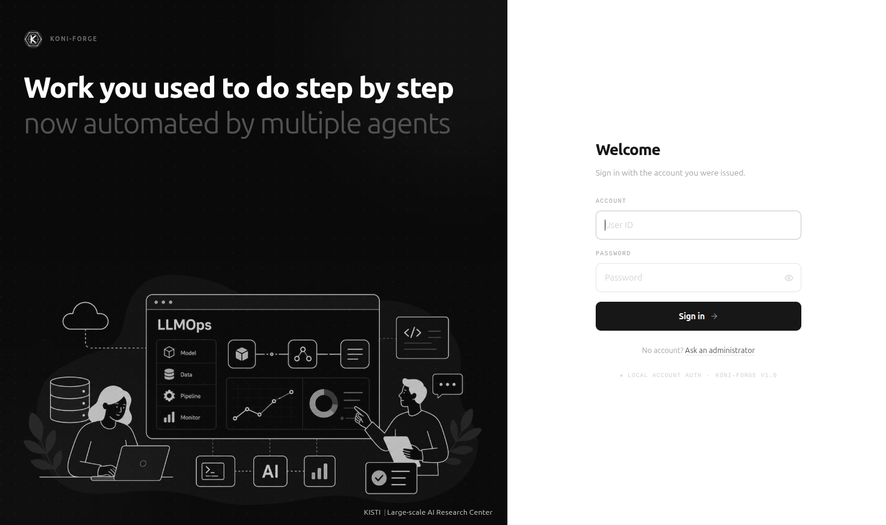

Building domain-specialised language models from raw documents — choosing between retrieval and fine-tuning by measuring what the base model already knows.
Large-scale AI Research Center, Korea Institute of Science and Technology Information (KISTI)
This page is a signpost — the system itself runs on our hardware. Click the button below to open it, and sign in with the account shown.
The address changes when the instance restarts; this page is updated to match, so the button above is always current. Everyone signs in with the same account, so treat anything you upload as visible to other visitors.

Adapting a language model to a specialised domain usually begins with a guess: fine-tune, retrieve, or both. KONI-Forge replaces that guess with a measurement. Given a collection of documents, it indexes them for retrieval and then probes the base model against their content to estimate how much of that knowledge the model already holds, and how often it fabricates an answer when it does not. The resulting coverage and hallucination rates decide the route: retrieval alone above 70 % coverage, supervised fine-tuning below 50 %, and a hybrid in between — with a high hallucination rate pulling the verdict down a step regardless of coverage.
When the route calls for training, the platform generates question–answer pairs from the same documents, filters and augments them, and runs the fine-tune. Training is watched from the inside: each checkpoint is benchmarked during the run, and a significant regression halves the learning rate, stops training, or rolls back to the last checkpoint known to be safe. The finished model is evaluated against public benchmarks, against the source documents themselves, and — where retrieval is part of the answer — for faithfulness to the retrieved context.
The stages are driven by specialist agents that read a shared state and choose the next step from it, rather than following a fixed script. Two modes are available: an autonomous one that runs the pipeline end to end, and a guided one that stops for confirmation at each decision. Everything runs on local hardware with a local model provider, so documents need not leave the machine.
| Hardware | One NVIDIA RTX 4000 Ada (20 GB), shared by every visitor |
|---|---|
| Models | 0.5B–1B parameters — what this hardware supports |
| Documents | Bring your own. English only, as the pipeline runs in English |
| Availability | Research hardware, not a hosted service. It is switched off between sessions |
| Scope | Some features of the full system are disabled in this public build |
A training run started by one visitor queues the next one behind it, so please keep runs small.
KONI-Forge is proprietary software. Access to this demonstration is a limited, revocable permission to evaluate the system — not a licence to the software.
What you upload. Documents you submit are processed and stored on the host machine and may be visible to other visitors, who share the same account. Do not upload confidential, personal, or otherwise sensitive material. The demonstration is provided as is, without warranty, and may be modified, suspended, or withdrawn at any time.